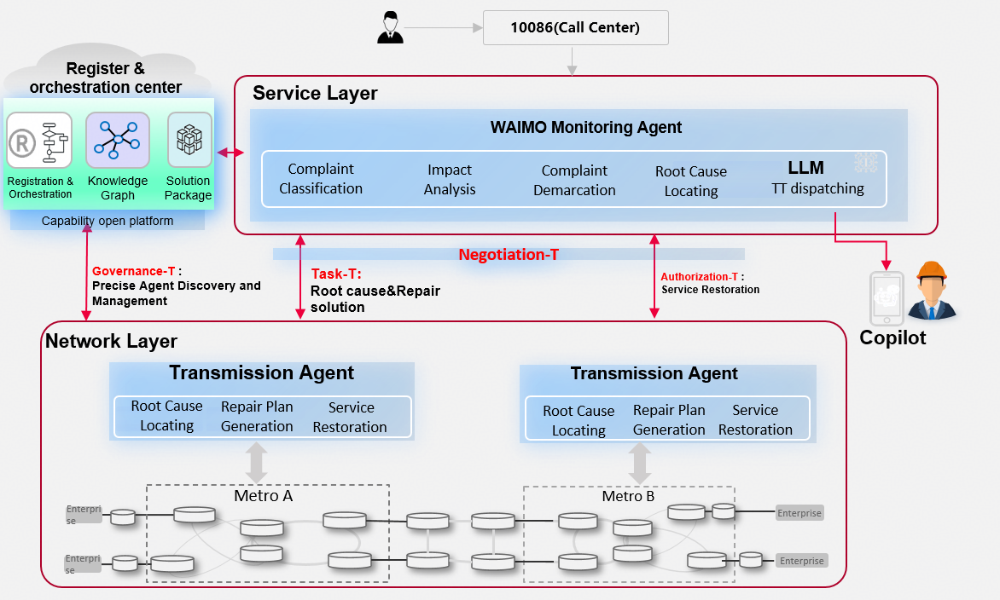

Case Study 2
End-to-End Complaint Handling Automation
Agent to Agent Protocol for Telecoms · Multi-Agent Collaboration
Overview
End-to-end automation of complaint handling through A2P multi-agent collaboration. The pilot has been completed in the transmission domain at CMCC Guangdong, reducing integration TTM from months to days.
Scenario: 10086 (Call Center) → WAIMO Monitoring → Transmission Agents handling metro/enterprise faults across regions and vendors.
Key Challenges
Stringent SLA
E.g., 3A private line faults must be processed within 2 hours, involving cross-regional and cross-vendor scenarios — highly challenging for fault localization.
Low Multi-Agent Interaction Efficiency
The accuracy and efficiency of collaborative interactions between agents is low.
Long Integration Cycle
Integration involves multiple systems with new functions added between them. Traditional API hardcoding results in lengthy iteration and adaptation times.
Architecture

Key Achievements & Metrics
Timely Complaint Handling
90%+
Interaction Accuracy
90%+
Interaction Efficiency Gain
+40%
Integration TTM
Months → Days
End-to-End Automation
Achieved
Pilot Location
CMCC Guangdong